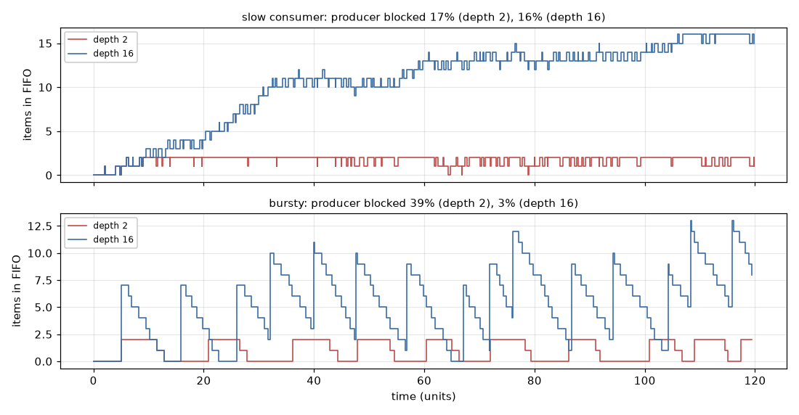
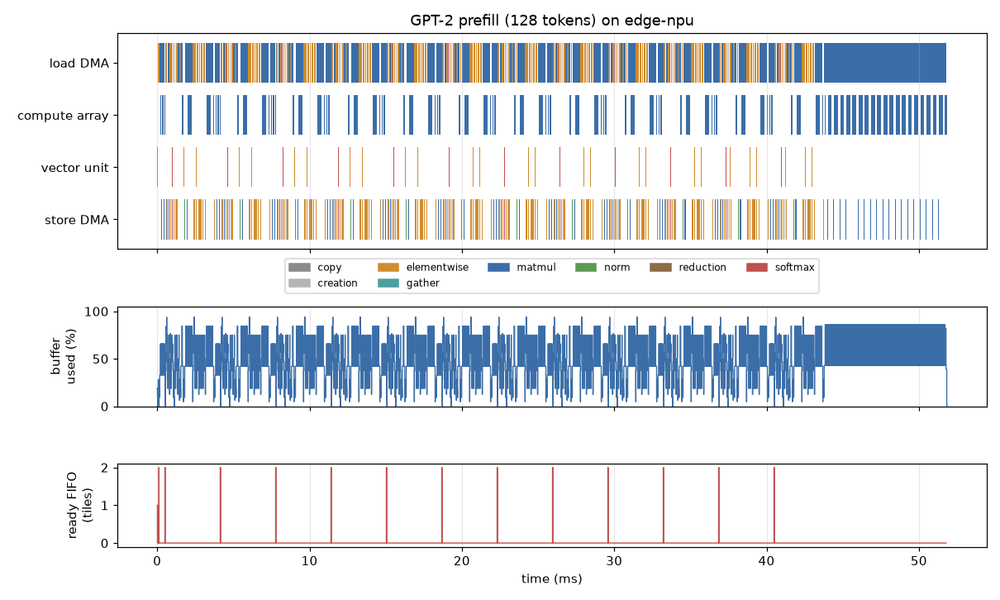

A real graph from torch.export or ONNX run through an event-driven model of a tiled accelerator: off-chip memory, interconnect, DMA engines, an on-chip buffer with back-pressure, a compute array and a vector unit. Lowering to tiles, a cycle-approximate timing model, the roofline, Little's law and stall attribution, a timeline and hot-spot report, a cycle-stepped twin, how gem5 and SST are structured, a bit-identical C++ fast path with pybind11, ONNX Runtime execution providers, and an FHE-style NTT workload.
Concepts used here, and where they are explained. Each links to a glossary entry: this series glossary, or the glossaries of LLM Inference Simulators and FHE Accelerator Simulators for concepts those series already explain.
Deck 10 turned PyTorch and ONNX models into operator traces and costed them on a roofline: one number per operator, no queues, no contention. An architect's next questions need time to pass: while the array computes, is the next tile already loading? Does the buffer fill? Which engine is everyone waiting for? This deck builds the event-driven model that answers them, simfront.accel in Torch_Sim_Frontend, and runs real graphs through it end to end.
Its one-page block specification (docs/accel_spec.md) is written as for a hardware block: contents, interfaces, behaviour, timing, ordering, counters and assumptions. Every number on these slides comes from examples/accel_results.md, and the two presets (edge-npu, dc-npu) are illustrative.
SimPy has few primitives (InfSim 02 lists them all), and a data-movement accelerator needs only these:
| Block | SimPy | What the primitive gives for free |
|---|---|---|
| Memory channels | Resource(capacity=channels) | A queue of transfers waiting for a channel |
| NoC read, NoC write | Resource(capacity=1) each | Serialisation per direction (separate read and write networks, as on AXI) |
| On-chip buffer | Container(capacity=bytes) | put(n) waits until n bytes are free: back-pressure |
| Ready and done FIFOs | Store() | Hand-off between engines, in order |
| DMA engines, compute | processes (generators) | Each engine's life as one readable function |
| "Operator stored" | Event() | Read-after-write dependencies between operators |
def load_dma():
for i, t in enumerate(tiles):
tm.issue[i] = env.now
o = first.get(i)
if o is not None and o.deps:
yield env.all_of([op_done[d] for d in o.deps])
tm.dep[i] = env.now
if t.alloc:
yield buf.put(t.alloc)
tm.alloc[i] = env.now
if t.load_dur > 0:
yield from transfer(t.load_dur, noc_r)
tm.load_end[i] = env.now
yield ready.put(i)Before the accelerator, the property that matters most in it: a producer and a consumer joined by simpy.Store(capacity=depth). A full FIFO makes put wait, so a producer that runs ahead is stalled instead of filling an infinite queue. The probe records the depth at every change; fifo.py is the whole model.

| Case | Depth | Throughput (items/unit) | Producer blocked | L | λW |
|---|---|---|---|---|---|
| slow consumer | 1 | 0.8271 | 17.0% | 0.809 | 0.809 |
| slow consumer | 2 | 0.8308 | 16.6% | 1.761 | 1.761 |
| slow consumer | 4 | 0.8317 | 16.4% | 3.709 | 3.709 |
| slow consumer | 8 | 0.8317 | 16.2% | 7.641 | 7.641 |
| slow consumer | 16 | 0.8317 | 15.9% | 15.373 | 15.373 |
| bursty | 1 | 0.5741 | 42.9% | 0.503 | 0.503 |
| bursty | 2 | 0.6181 | 38.5% | 1.003 | 1.003 |
| bursty | 4 | 0.7219 | 28.1% | 2.021 | 2.021 |
| bursty | 8 | 0.9054 | 9.6% | 4.208 | 4.208 |
| bursty | 16 | 0.9641 | 3.4% | 7.805 | 7.805 |
Source: examples/accel_results.md in Torch_Sim_Frontend
Depth buys throughput only when the rates vary. With a consumer 20% slower, depth changes nothing (the consumer sets the rate). With bursty arrivals, going from depth 1 to 16 raises throughput from 0.5741 to 0.9641. Little's law (L = λW) holds exactly on every run, which the tests assert: a free check on the probes.
The model takes a simfront-trace/1 trace from any of deck 10's front ends (torch.export, ONNX, the dispatch trace) and lowers it to tiles: the unit the hardware loads, computes and stores.
def _split_gemm(b: int, m: int, k: int, n: int, e_in: int, e_out: int, budget: int):
"""Block sizes (bb, bm, bk, bn) whose operands and result fit in ``budget`` bytes."""
def size(bb, bm, bk, bn):
return bb * (e_in * (bm * bk + bk * bn) + e_out * bm * bn)
bm, bk, bn = m, k, n
while size(1, bm, bk, bn) > budget:
big = max(bm, bk, bn)
if big == 1:
raise ValueError(f"a 1x1x1 GEMM block does not fit in a {budget}-byte tile")
if bm == big:
bm = math.ceil(bm / 2)
elif bn == big:
bn = math.ceil(bn / 2)
else:
bk = math.ceil(bk / 2)
bb = max(1, min(b, budget // size(1, bm, bk, bn))) if (bm, bk, bn) == (m, k, n) else 1
return bb, bm, bk, bnThe same CNN exported by torch.export and by ONNX does the same 2,802,304 multiply-accumulates on the array by both routes (a test asserts it).
Every duration is computed once, at lowering, so all three engines (the SimPy model, the fast path and the cycle-stepped twin) run the identical program.
| Event | Duration | Level of detail |
|---|---|---|
| Transfer of b bytes | latencyDRAM + latencyNoC + b / min(BWDRAM/channels, BWNoC) | Transaction: no banks, rows or bursts |
| Array tile (batch, m, k, n) | batch · ⌈m/R⌉ · ⌈n/C⌉ · k + R + C cycles | Cycle-approximate: output-stationary systolic array, fill and drain once per tile |
| Vector tile of w elements | ⌈w / lanes⌉ cycles | Throughput only |
The array formula is right to within a fill and drain per tile, and it captures the effect that matters to an architect: PE efficiency falls when m or n is not a multiple of the array size. A cycle-accurate model of the same array (every PE register, every skewed input) would agree on large tiles and cost orders of magnitude more to run. It is worth building when the question is inside the tile (a dataflow choice, a hazard), or to calibrate the formula against RTL, as SimEng 05 does for an NTT core. InfSim 01's fidelity ladder puts the rule in one line: use the highest rung that can answer the question.
Four first-order methods that every simulator result should be checked against, and how this model uses each:
| Method | Statement | In this model |
|---|---|---|
| Roofline (InfSim 03) | time ≥ max(FLOPs / peak, bytes / bandwidth) | A lower bound: the makespan is at least the total load time and at least the total compute time (tested) |
| Little's law (InfSim 06) | L = λW for any stable system | Asserted exactly on the FIFO model; a violation would be a probe bug |
| Utilisation law | U = X · S: busy fraction = throughput × service time | Every component's busy fraction, from its intervals; memory and NoC also as bandwidth used |
| Bottleneck analysis (InfSim 06) | The resource whose speed-up most shortens the run | Stall attribution (next slide): the largest wait names the hot-spot |
Latency against throughput. One inference's latency is the makespan; throughput needs the pipeline full. The FIFO slide is the throughput side of the same trade: depth (and buffer) buys throughput under variable rates, and costs latency and area (SimEng 13).
Utilisation is not saturation. GPT-2's prefill on edge-npu keeps the array at 31.0% (PE efficiency 98.1%) efficiency when busy, but busy only 31.0% of the run: the arithmetic is efficient, the array is starved.
The compute units issue in order, so the run splits exactly into computing and the gaps between tiles. Each gap is attributed by walking back along the next tile's load: was it transferring (or the DMA still busy with earlier tiles: load bandwidth), waiting for buffer space (buffer full), or waiting for an earlier operator's results to be stored (dependency)? The parts sum to the latency on every run, a tested invariant.
| Where the compute units' time went | Share |
|---|---|
| compute | 6.4% |
| load bandwidth | 59.8% |
| buffer full | 0.0% |
| dependency | 33.7% |
| store tail | 0.1% |
Source: examples/accel_results.md in Torch_Sim_Frontend
For the small CNN on edge-npu, compute is 6.4% of the time; the hot-spot is off-chip memory, and the operator boundaries cost a third.
Eight images at 102.4 GB/s on a 32 × 32 array: a 512 KiB buffer gives 158.84 µs, a 2 MiB buffer 204.45 µs. Tiles grow with the buffer, so each operator has fewer, larger tiles and less overlap of load, compute and store; the dependency share rises from 14.7% to 27.4%. Tile size is a design parameter in its own right.
The recorded sweep (batch of eight images through the CNN, on the C++ fast path). Choose a configuration; the bar splits the compute units' time into computing and the three kinds of stall.
Published configurations, traced on the meta device without weights (deck 10), then simulated:
| Model | Tokens | Preset | Tiles | Latency (ms) | Array busy | DRAM bandwidth used | Hot-spot |
|---|---|---|---|---|---|---|---|
| gpt2 | 128 | edge-npu | 1,051 | 51.837 | 31.0% | 56.4% | off-chip memory |
| gpt2 | 128 | dc-npu | 463 | 4.212 | 24.2% | 10.2% | off-chip memory |
| llama3-8b | 2048 | dc-npu | 17,991 | 1,613.057 | 62.5% | 9.4% | compute array |
Source: examples/accel_results.md in Torch_Sim_Frontend

The timeline shows the hot-spot at a glance: the load DMA lane is nearly solid, the array lane is not. The last 8 ms is the LM-head matmul (50,257 × 768 weights): 15.5% of the run in one operator. Llama-3-8B on dc-npu is the opposite case: compute-bound, with the hot-spot on the array. The same intervals are written as a Chrome trace for Perfetto.
An RTL simulator advances a clock and evaluates every block on every edge (Introduction to Simulation measures Icarus against Verilator). cycle.py does that to this accelerator: on every cycle each engine is a state machine that retires its tile if its countdown has expired and starts the next if it can. The SimPy model instead jumps from one state change to the next.
| Program | Tiles | Cycles | SimPy events | Cycle-model evaluations | SimPy (s) | Cycle-stepped (s) | Slower by | Identical |
|---|---|---|---|---|---|---|---|---|
| tiny-cnn | 14 | 104,439 | 314 | 313,449 | 0.001 | 0.04 | 41x | yes |
| tiny-llama, 32 tokens | 139 | 973,135 | 2,999 | 2,920,647 | 0.009 | 0.27 | 31x | yes |
| gpt2, 128 tokens | 1051 | 51,837,348 | 20,775 | 155,520,753 | 0.059 | 13.83 | 233x | yes |
Source: examples/accel_results.md in Torch_Sim_Frontend
On a program quantised to whole cycles, both engines give the same eight event times for every tile. Within a cycle the twin retires first, then starts, and repeats until nothing changes, which is what one SimPy instant does.
Event-driven work grows with state changes; cycle-based work with cycles, busy or idle. For GPT-2 that is 20,775 events against 155,520,753 evaluations. Cycle-based earns its cost when the question is inside the cycles: arbitration, pipeline hazards.
Two production simulators, built on the same three ideas as this model: components, connections with flow control, and an event queue. Names below are as in recent releases of each; their documentation (gem5, SST) is the reference.
| Idea | gem5 | SST | simfront.accel |
|---|---|---|---|
| Unit of modelling | SimObject: a C++ class with a Python declaration of its parameters | Component (C++, registered with element-library macros), with pluggable SubComponents | A SimPy process plus the resources it holds |
| Configuration | A Python script builds the object tree, then instantiates and simulates it | A Python script creates components, sets parameters and connects links | AccelConfig, a frozen dataclass |
| Connections | Ports: a request port bound to a response port in the Python config; packets carry requests | Links between named ports, each with a latency; components exchange Events over them | Shared Store and Container objects |
| Flow control | Timing mode: a send that returns false is retried when the receiver signals it can accept (back-pressure) | Up to the components (credits, as in its network models) | Container.put waits for space |
| Time | An event queue in ticks (1 ps by default); clocked objects convert cycles to ticks | A core time base; components register clock handlers and per-link event handlers | SimPy's heap of events, in seconds (or cycles, quantised) |
| Fidelity modes | Atomic, timing and functional accesses; CPU models from simple to out-of-order | Whatever each element implements, from analytic to cycle-level | One timing model; a cycle-stepped twin |
| Parallelism | One event queue per simulated system by default | Conservative parallel simulation over MPI ranks and threads; link latencies give the lookahead | None (sweeps run in parallel instead) |
The lesson for a model of this size: make the connection the unit of flow control, as both do. Here a Container is the port's ready signal; in gem5 it is a retry, in SST a credit. Parallel discrete-event simulation (InfSim 08) needs the lookahead that SST's link latencies provide.
The SimPy model spends its time on event bookkeeping: 20,775 events for GPT-2's 1051 tiles (slide 10), each a heap push and pop and a generator resumed (measure before porting: SimEng 11). When the two DMA engines cannot contend for a memory channel, the loop has nothing left to arbitrate, and every tile's times follow from earlier tiles': a recurrence with a min-heap of buffer frees. It is written in Python, then ported line for line to C++20 and exposed with pybind11. All three agree bit for bit on every field of every tile, on real traces and on Hypothesis-generated programs.
| Program | Tiles | SimPy (s) | Python recurrence (s) | C++ call (s) | C++ kernel (s) | Identical |
|---|---|---|---|---|---|---|
| tiny-cnn (edge-npu) | 14 | 0.001 | 0.0000 | 0.0000 | 0.00000 | yes |
| gpt2 128 (edge-npu) | 1,051 | 0.061 | 0.0019 | 0.0009 | 0.00013 | yes |
| llama3-8b 2048 (dc-npu) | 17,991 | 0.996 | 0.0372 | 0.0194 | 0.00287 | yes |
| llama3-8b 512 (edge-npu) | 87,075 | 3.728 | 0.1727 | 0.0991 | 0.01592 | yes |
Source: examples/accel_results.md in Torch_Sim_Frontend
On the largest program the algorithm (no event loop) bought 22x; C++ bought 11x on the kernel but only 1.7x on the whole call, because converting Python lists dominates. Lowering, still Python, now takes 0.2562 s, longer than the simulation. The next port is the lowering, or a zero-copy array interface (SimEng 02 asks the same question for Rust).
The port is small, and uses the features worth knowing (SimEng 03 covers value types and RAII):
template <typename K>
concept Ordered = requires(const K& a, const K& b) {
{ a < b } -> std::convertible_to<bool>;
};
// A binary min-heap ordered by key(item). std::priority_queue would do; writing it out keeps
// the pop order identical to Python's heapq for equal keys (both break ties by a sequence number).
template <typename T, Ordered K, K (*key)(const T&)>
class MinHeap {auto p = std::make_unique<Pipeline>(std::move(op), std::move(first), std::move(last), std::move(stores),
std::move(alloc_in), std::move(alloc_out), std::move(load_dur),
std::move(comp_dur), std::move(store_dur), std::move(deps), n_ops,
capacity);
py::gil_scoped_release release;
return p->run();MinHeap<T, K, key> is a generic binary heap; the C++20 concept Ordered rejects a key type without < at compile time, with a readable error.std::moves it into the object; run() moves its result columns out. No million-element vector is copied.std::make_unique builds the pipeline; Python owns bound objects through std::unique_ptr, pybind11's default holder, so memory is freed when the Python object goes.std::span views a dependency list without copying; [[nodiscard]] and noexcept document intent.A hardware backend joins ONNX Runtime as an execution provider (EP). When a session is created, ONNX Runtime asks each EP in priority order which nodes it can run (GetCapability), fuses each EP's connected nodes into subgraphs, and gives everything unclaimed to the CPU EP (InfSim 09; ORT: adding an EP). A real EP is C++ against ONNX Runtime; ep.py reproduces the partition so the simulator can cost it:
ep.ort_providers runs a real session with profiling on and reads which provider ran each node;ep.claim is a GetCapability: claim by operator type, group connected claimed nodes;ep.simulate: claimed operators on the accelerator model, the rest on a host roofline, a link transfer for every crossing.| Device supports | Nodes claimed | Subgraphs | Crossings | Device (µs) | Host (µs) | Link (µs) | Total (µs) |
|---|---|---|---|---|---|---|---|
| Conv, Gemm | 4/17 | 4 | 13 | 36.35 | 3.04 | 15.19 | 54.59 |
| + Relu, MaxPool | 10/17 | 5 | 12 | 69.17 | 1.16 | 15.60 | 85.93 |
| + BatchNormalization, ReduceMean (everything) | 17/17 | 1 | 0 | 99.96 | 0.00 | 0.00 | 99.96 |
Source: examples/accel_results.md in Torch_Sim_Frontend
With these illustrative numbers the host is better at memory-bound operators than the edge device, so claiming fewer nodes is faster. The partition has to be costed, not counted: the point of operator coverage as a time metric.
Lattice-based homomorphic encryption multiplies polynomials in Zq[X]/(XN+1), stored as one row of N residues per RNS prime ("limb"), through the NTT: c = INTT(NTT(a) · NTT(b)) after a twist by a 2N-th root of unity (FHESim 01). ntt.py has the golden model, checked against schoolbook multiplication by Hypothesis, and a workload builder in the same trace format, so it runs through the same accelerator.
def polymul(a: list[int], b: list[int], q: int) -> list[int]:
"""a * b in Z_q[X]/(X^n + 1) through the NTT (negacyclic twist by psi)."""
n = len(a)
p = psi(n, q)
w = p * p % q
tw = [pow(p, i, q) for i in range(n)]
fa = ntt([x * t % q for x, t in zip(a, tw, strict=True)], q, w)
fb = ntt([x * t % q for x, t in zip(b, tw, strict=True)], q, w)
c = intt([x * y % q for x, y in zip(fa, fb, strict=True)], q, w)
inv = pow(p, q - 2, q)
return [x * pow(inv, i, q) % q for i, x in enumerate(c)]One product at N = 216 with 24 limbs is 96 operators. An NTT is (N/2) log2N butterflies; at three operations each that is 3.0 operations per input byte. On dc-npu it takes 489.10 µs and is memory-bound; with a 16-lane vector unit, 2,789.18 µs and NTT-bound. The full FHE picture (key switching, bootstrapping, key traffic) is in FHESim 02 and FHE_Accelerator_Sim.
FHE is bound by data movement (FHESim 02), so one family of ideas moves the computation to the data: into memory (FHEmem, arXiv:2311.16293; APACHE, arXiv:2404.15819), into the network (in-network aggregation for training, SwitchML, arXiv:1903.06701), or onto light (FHESim 04, FOptInf 03). The model adds a stage in the memory read path that performs the NTT as the data streams in (a pipelined NTT, like the delay-feedback designs in Cryptography 10), with a budget in operations per byte.
| Preset | Vector lanes | NTT runs | Latency (µs) | Speed-up | Hot-spot |
|---|---|---|---|---|---|
| edge-npu | 64 | on chip | 6,856.50 | 1.00x | off-chip memory |
| edge-npu | 64 | in transit, 0.5 | 21,208.89 | 0.32x | in-transit stage |
| edge-npu | 64 | in transit, 1.6 | 9,043.77 | 0.76x | in-transit stage |
| edge-npu | 64 | in transit, 3.0 | 6,463.29 | 1.06x | in-transit stage |
| edge-npu | 64 | in transit, 6.0 | 6,463.29 | 1.06x | in-transit stage |
| edge-npu | 8 | on chip | 9,719.49 | 1.00x | vector unit |
| edge-npu | 8 | in transit, 0.5 | 21,294.90 | 0.46x | in-transit stage |
| edge-npu | 8 | in transit, 1.6 | 9,129.78 | 1.06x | in-transit stage |
| edge-npu | 8 | in transit, 3.0 | 6,549.30 | 1.48x | in-transit stage |
| edge-npu | 8 | in transit, 6.0 | 6,549.30 | 1.48x | in-transit stage |
| dc-npu | 512 | on chip | 489.10 | 1.00x | off-chip memory |
| dc-npu | 512 | in transit, 0.5 | 1,407.21 | 0.35x | in-transit stage |
| dc-npu | 512 | in transit, 1.6 | 628.65 | 0.78x | in-transit stage |
| dc-npu | 512 | in transit, 3.0 | 463.50 | 1.06x | in-transit stage |
| dc-npu | 512 | in transit, 6.0 | 463.50 | 1.06x | in-transit stage |
| dc-npu | 16 | on chip | 2,789.18 | 1.00x | vector unit |
| dc-npu | 16 | in transit, 0.5 | 1,502.45 | 1.86x | in-transit stage |
| dc-npu | 16 | in transit, 1.6 | 723.88 | 3.85x | in-transit stage |
| dc-npu | 16 | in transit, 3.0 | 558.73 | 4.99x | in-transit stage |
| dc-npu | 16 | in transit, 6.0 | 558.73 | 4.99x | in-transit stage |
Source: examples/accel_results.md in Torch_Sim_Frontend
The stage and its budgets are this deck's illustration, attributed to no one. What the model says: when the on-chip NTT is fast, the stage gains little and a stage that cannot keep up with the stream throttles memory; when the NTT engine is the bottleneck, it wins up to 4.99x; above the NTT's own 3.0 operations per byte, more budget buys nothing. Precision, conversion energy and area are not modelled here (FHESim 04 prices them for optics).
The model is held to the same discipline as the front end (SimEng 09): requirements SF-18 to SF-28 in EARS patterns, each traced to the tests that verify it by a matrix generated from the test run.
| Requirement | Oracle in the tests |
|---|---|
| SF-18 tiles fit; a GEMM's tiles do exactly its MACs | The cost rules' FLOPs; hand-worked im2col shapes |
| SF-19 back-pressure; occupancy ≤ capacity | Occupancy rebuilt from the timings, every run |
| SF-20 loads wait for producers to be stored | Event order, every operator |
| SF-21 metrics, stalls sum to latency, plots | The sum, to 1 part in 1012; a PNG and a Chrome trace written |
| SF-22, SF-23 fast path bit-identical; refuses contention | The SimPy model, exactly, plus Hypothesis-generated programs |
| SF-24 cycle-stepped twin identical | The SimPy model, exactly |
| SF-25, SF-26 NTT product; in-transit budget | Schoolbook multiplication; the budget as a bound |
| SF-27, SF-28 Little's law; EP partition | L = λW exactly; ONNX Runtime's own profile |
GitHub Actions runs the suite on Python 3.10 and 3.12 with SIMFRONT_REQUIRE_CPP=1, which turns a C++ module that failed to build into a test failure instead of a silent fallback to Python, then smoke-tests the CLI on the CNN, the NTT workload and the cycle-stepped twin.
Resource, Container, Store).Resource for channels and links, Container for buffer bytes (back-pressure for free), Store for FIFOs, events for dependencies.